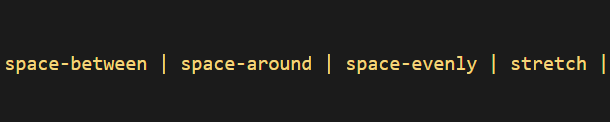

CSS (Cascading Style Sheets)
CSS sau Cascading Style Sheets este un standard pentru formatarea
elementelor unui document HTML. Stilurile se pot atașa elementelor
HTML prin intermediul unor fișiere externe sau în cadrul documentului,
prin elementul <style> și/sau atributul style. CSS se poate
utiliza și pentru formatarea elementelor XHTML, XML și SVGL.[1] CSS
este una dintre tehnologiile de bază utilizate în procesul de
dezvoltare web, împreună cu HTML și JavaScript.[2]
CSS permite separarea și prezentarea vizuală a conținutului unei
pagini web, inclusiv culorile și fonturile disponibile.[3] Separarea
elementelor unei pagini îmbunătățește accesibilitatea paginii și
permite o mai bună flexibilitate și un control în specificațiile
caracteristicilor de prezentare.
Flexbox
Proprietăți pentru părinte (container flexibil):
display
Aceasta definește un container flexibil; inline sau bloc în funcție de date
valoare. Permite un context flexibil pentru toți copiii săi direcți.
Rețineți că coloanele CSS nu au niciun efect asupra unui container flexibil.
flex-direction
Aceasta stabilește axa principală, definind astfel direcția în care sunt elementele flexibile
plasat în containerul flexibil. Flexbox este (în afară de ambalarea opțională) a
conceptul de layout cu o singură direcție. Gândiți-vă la articolele flexibile ca fiind în primul rând așezare
fie în rânduri orizontale, fie în coloane verticale.
- row (default): de la stânga la dreapta în ltr; dreapta la stânga în rtl
- row-reverse:
dreapta la stânga în ltr; de la stânga la dreapta în rtl
- column: la fel ca și row, dar de sus în jos
- column-reverse: la fel ca row-reverse, dar de jos în sus
flex-wrap
În mod implicit, elementele flexibile vor încerca toate să se potrivească pe o singură linie. Te poți schimba
asta și permiteți articolelor să se împacheteze după cum este necesar cu această proprietate.
- nowrap (default): toate articolele flexibile vor fi pe o singură linie.
-
wrap: articolele flex se vor înfășura pe mai multe linii, de sus în jos.
-
wrap-reverse: articolele flex se vor înfășura pe mai multe linii de jos
sus.
flex-flow
Aceasta este o prescurtare pentru proprietățile flex-direction și flex-wrap,
care împreună definesc axele principale și transversale ale containerului flexibil. Valoarea implicită este row nowrap.
justify-content
Aceasta definește alinierea de-a lungul axei principale. Ajută la distribuirea spațiului liber suplimentar rămas atunci când sunt toate elementele flexibile de pe o linie
inflexibile sau sunt flexibile, dar au atins dimensiunea maximă. De asemenea, exercită un anumit control asupra alinierii elementelor atunci când acestea depășesc
linia.
-
flex-start (default): articolele sunt ambalate spre începutul
flex-direction.
-
flex-end: articolele sunt împachetate spre sfârșitul flex-direction.
-
start: articolele sunt împachetate spre începutul direcției modului de scriere.
-
end: articolele sunt împachetate spre sfârșitul direcției modului de scriere.
-
left: articolele sunt împachetate spre marginea stângă a containerului, cu excepția cazului în care acest lucru nu are sens cu direcția flexibilă, atunci se comportă ca la început.
-
right: articolele sunt împachetate spre marginea dreaptă a containerului, cu excepția cazului în care acest lucru nu are sens cu direcția flexibilă, atunci se comportă ca la capăt.
- center: elementele sunt centrate de-a lungul liniei
-
space-between: articolele sunt distribuite uniform pe linie; primul articol este pe linia de început, ultimul element pe linia finală
-
space-around: articolele sunt distribuite uniform pe linie cu spațiu egal în jurul lor. Rețineți că vizual spațiile nu sunt egale, deoarece toate elementele au spațiu egal pe ambele părți. Primul articol va avea o unitate de spațiu pe marginea containerului, dar două unități de spațiu între următorul articol, deoarece următorul articol are propria sa spațiere care se aplică.
-
space-evenly: articolele sunt distribuite astfel încât distanța dintre oricare două elemente (și spațiul până la margini) să fie egală.


align-items
Aceasta definește comportamentul implicit pentru modul în care elementele flexibile sunt așezate de-a lungul axei transversale pe linia curentă. Gândiți-vă la aceasta ca la versiunea de conținut justificat pentru axa transversală (perpendiculară pe axa principală).
-
stretch (default): întindeți pentru a umple recipientul (respectați totuși min-width/max-width.)
-
flex-start / start / self-start: articolele sunt plasate la începutul axei transversale. Diferența dintre acestea este subtilă și se referă la respectarea regulilor de direcție flexibilă sau a regulilor modului de scriere.
-
flex-end / end / self-end: articolele sunt plasate la capătul axei transversale. Diferența este din nou subtilă și se referă la respectarea regulilor de direcție flexibilă față de regulile modului de scriere.
- center: elementele sunt centrate pe axa transversală.
- baseline: elementele sunt aliniate, cum ar fi liniile lor de bază aliniate.
align-content
Acest lucru aliniază liniile unui container flexibil atunci când există spațiu suplimentar pe axa transversală, similar modului în care justify-content aliniază articolele individuale în cadrul axei principale.
-
normal (default): articolele sunt împachetate în poziția lor implicită, ca și cum nu ar fi setată nicio valoare.
-
flex-start / start: articolele ambalate până la începutul containerului. Flex-start (mai acceptat) onorează direcția flex, în timp ce start onorează direcția modului de scriere.
-
flex-end / end: articolele ambalate până la capătul containerului. flex-end (mai mult suport) onorează direcția flex, în timp ce end onorează direcția modului de scriere.
- center: articole centrate în container.
-
space-between: articole distribuite uniform; prima linie este la începutul containerului în timp ce ultima este la sfârșit.
-
space-around: articole distribuite uniform cu spațiu egal în jurul fiecărei linii.
-
space-evenly: articolele sunt distribuite uniform cu spațiu egal în jurul lor.
- stretch: articolele sunt distribuite uniform cu spațiu egal în jurul lor.


gap, row-gap, column-gap
Proprietatea gap controlează în mod explicit spațiul dintre elementele flexibile. Se aplică acea distanță numai între articole, nu pe marginile exterioare.
Comportamentul ar putea fi gândit ca un jgheab minim, ca și cum jgheabul ar fi mai mare (din cauza a ceva de genul justify-content: space-between;) atunci decalajul va avea efect numai dacă acel spațiu ar ajunge mai mic.
Nu este exclusiv pentru flexbox, gap funcționează și în aspectul grilă și cu mai multe coloane.
Proprietăți pentru copii (articole flexibile):
order
În mod implicit, elementele flexibile sunt așezate în ordinea sursei. Cu toate acestea, proprietatea order controlează ordinea în care apar în containerul flexibil.
Articolele cu aceeași comandă revin la comanda sursă.
flex-grow
Aceasta definește capacitatea unui element flexibil de a crește dacă este necesar. Acceptă o valoare fără unitate care servește drept proporție. Dictează ce cantitate din spațiul disponibil în interiorul containerului flexibil ar trebui să ocupe articolul.
Dacă toate articolele au flex-grow setat la 1, spațiul rămas din container va fi distribuit în mod egal tuturor copiilor. Dacă unul dintre copii are valoarea 2, acel copil ar ocupa de două ori mai mult spațiu decât oricare dintre ceilalți (sau va încerca, cel puțin).
Numerele negative sunt nevalide.
flex-shrink
Aceasta definește capacitatea unui element flexibil de a se micșora dacă este necesar. Numerele negative sunt nevalide.
flex-basis
Dacă este setat la 0, spațiul suplimentar din jurul conținutului nu este luat în considerare. Dacă este setat la automat, spațiul suplimentar este distribuit pe baza valorii sale de creștere flexibilă. Vedeți acest grafic.
Aceasta definește dimensiunea implicită a unui element înainte ca spațiul rămas să fie distribuit. Poate fi o lungime (de exemplu, 20%, 5rem etc.) sau un cuvânt cheie. Cuvântul cheie auto înseamnă „uitați-vă la proprietatea mea de lățime sau înălțime” (care a fost făcut temporar de cuvântul cheie de dimensiune principală până când a fost depreciat). Cuvântul cheie de conținut înseamnă „dimensionați-l în funcție de conținutul articolului” - acest cuvânt cheie nu este încă bine acceptat, așa că este greu de testat și mai greu de știut ce fac frații săi max-content, min-content și fit-content.
flex
Aceasta este prescurtarea pentru flex-grow, flex-shrink și flex-base combinate. Al doilea și al treilea parametri (flex-shrink și flex-basis) sunt opționali. Valoarea implicită este 0 1 auto, dar dacă o setați cu o singură valoare numerică, cum ar fi flex: 5;, asta schimbă flex-basis la 0%, deci este ca și cum setați flex-grow: 5; flex-contractie: 1; flex-bază: 0%;.
Se recomandă să utilizați această proprietate prescurtată în loc să setați proprietățile individuale. Stenografia stabilește celelalte valori în mod inteligent.
align-self
Acest lucru permite alinierea implicită (sau cea specificată de align-items) să fie înlocuită pentru elementele flexibile individuale.
Consultați explicația elementelor de aliniere pentru a înțelege valorile disponibile.
Rețineți că float, clear și vertical-align nu au niciun efect asupra unui element flexibil.
CSS Media Queries
Interogările media pot modifica aspectul (și chiar comportamentul) unui site web sau a unei aplicații pe baza unui set de condiții potrivite despre dispozitivul, browserul sau setările de sistem ale utilizatorului.
Interogările CSS Media sunt o modalitate de a viza browserul după anumite caracteristici, caracteristici și preferințe ale utilizatorului, apoi aplicați stiluri sau rulați alt cod pe baza acestor lucruri. Poate că cele mai frecvente interogări media din lume sunt cele care vizează anumite intervale de vizualizare și aplică stiluri personalizate, care au dat naștere întregii idei de design responsive.
Există o mulțime de alte lucruri pe care le putem viza în afară de lățimea ferestrei de vizualizare. Aceasta ar putea fi rezoluția ecranului, orientarea dispozitivului, preferința sistemului de operare sau chiar mai mult dintr-o mulțime de lucruri pe care le putem interoga și folosi pentru a stila conținutul.
Anatomy of a Media Query
Acum că am văzut mai multe exemple de unde pot fi folosite interogări media, să le deosebim și să vedem ce fac de fapt.
@media
Primul ingredient dintr-o rețetă de interogare media este însăși regula @media, care este una dintre multele reguli CSS. De ce @media atrage toată atenția? Deoarece este adaptat tipului de media cu care este vizualizat un site, ce caracteristici acceptă acel tip de media și operatori care pot fi combinați pentru a combina și potrivi condiții simple și complexe deopotrivă.
Media types
Ce tip de media încercăm să vizam? În multe (dacă nu în cele mai multe) cazuri, veți vedea o valoare de ecran folosită aici, ceea ce are sens, deoarece multe dintre tipurile de media pe care încercăm să le potrivim sunt dispozitive cu ecrane atașate la ele.
Dar ecranele nu sunt singurul tip de media pe care îl putem viza, desigur. Avem câteva, printre care:
- all: Se potrivește cu toate dispozitivele.
- print: Potrivește documentele care sunt vizualizate într-o previzualizare de tipărire sau orice suport media care descompune conținutul în pagini destinate tipăririi.
- screen: Potrivește dispozitivele cu un ecran
- speech: Potrivește dispozitivele care citesc conținutul în mod audibil, cum ar fi un cititor de ecran. Acesta înlocuiește tipul auditiv depreciat de la nivelul 4 al interogărilor media.
Media features
Odată ce definim tipul de media pe care încercăm să-l potrivim, putem începe să definim ce caracteristici încercăm să-l potrivim. Am analizat o mulțime de exemple care potrivesc ecranele cu lățimea, unde ecranul este tipul și atât lățimea minimă, cât și lățimea maximă sunt caracteristici cu valori specifice.
Operators
Interogările media acceptă operatori logici, cum ar fi multe limbaje de programare, astfel încât să putem potrivi tipurile media în funcție de anumite condiții. Regula @media este ea însăși un operator logic care, practic, afirmă că „dacă” următoarele tipuri și caracteristici se potrivesc, atunci faceți unele lucruri.
And: Dar putem folosi operatorul and dacă vrem să țintim ecrane într-un interval de lățimi:
Or (or comma-separated): De asemenea, putem separa caracteristicile prin virgulă ca o modalitate de a folosi un operator sau pentru a le potrivi pe altele:
Not:
Poate că vrem să țintim dispozitivele prin ceea ce acestea nu acceptă sau nu se potrivesc. Această declarație elimină culoarea de fundal a corpului atunci când dispozitivul este o imprimantă și poate afișa doar o culoare.